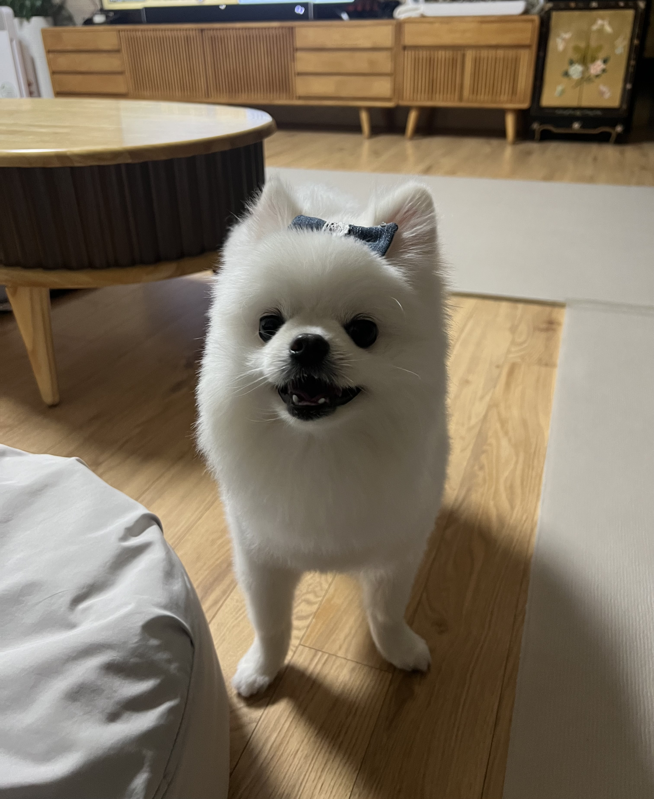

자기 소개
안녕하세요. 제 이름은 주연서입니다. 저는 현재 단국대학교에 재학중입니다.
포트폴리오
저는 22학번이고 3학년입니다.
연락처
이메일: wndustj1114@naver.com
전화번호: 010-7667-6465
볼링 동아리 활동
저는 대학에서 볼링 동아리에 소속되어 활동하고 있습니다. 볼링을 좋아하는 사람들과 함께 즐거운 시간을 보내고 있습니다.
매주 수요일마다 정기전을 하고 평소에는 시간이 되는 사람들끼리 따로 모여 볼링을 치기도 합니다.
볼링을 통해 스트레스를 해소하는 것뿐만 아니라, 새로운 경험과 사람들을 만나고 있습니다.
내가 좋아하는 것들
다음은 제가 좋아하는 몇 가지입니다:
- 음악: 저는 팝송을 좋아합니다. 특히 잔잔한 팝송은 공부를 하며 자주 듣습니다.
- 영화: 판타지와 과학 소설 영화를 즐겨 봅니다. 특히 마블 시리즈를 좋아합니다.
- 음식: 제가 좋아하는 음식은 떡볶이와 마라탕입니다.
- 여행: 저는 바다를 좋아해서 바닷가에 여행가는 것을 좋아합니다.
- 책: 저는 짧은 시를 좋아해서 시 모음집을 자주 봅니다.
- 동물: 저는 강아지를 너무 좋아합니다.
강아지 소개
제가 정말 좋아하는 제 친구의 강아지를 소개하겠습니다. 이름은 떡국이고 포메라니안입니다. 이름이 떡국이라서 저는 보통 꾹이라고 부릅니다. 꾹이는 개인기로 앉아, 엎드려, 손, 코를 할 수 있습니다. 개인기를 하는것도 너무 귀엽지만 꾹이는 정말 예쁘게 생겨서 미모가 개인기가 아닐까 싶습니다!
